hydrological_modules package¶
Initialize¶
miscInitial module¶
Initializing some variables
-
class
cwatm.hydrological_modules.miscInitial.miscInitial(misc_variable)[source]¶ Bases:
objectMiscellaneous repeatedly used expressions Definition if cell area comes from regular grid e.g. 5x5km or from irregular lat/lon Conversion factors between m3 and mm etc.
Note
Only used in the initial phase.
initcondition module¶
Load initial storage parameter maps
-
class
cwatm.hydrological_modules.initcondition.initcondition(initcondition_variable)[source]¶ Bases:
objectREAD/WRITE INITIAL CONDITIONS all initial condition can be stored at the end of a run to be used as a warm start for a following up run
-
dynamic()[source]¶ Dynamic part of the initcondition module write initital conditions into a single netcdf file
Note
Several dates can be stored in different netcdf files
-
initial()[source]¶ - initial part of the initcondition module
Puts all the variables which has to be stored in 2 lists:
initCondVar: the name of the variable in the init netcdf file
initCondVarValue: the variable as it can be read with the ‘eval’ command
Reads the parameter save_initial and save_initial to know if to save or load initial values
-
load_initial(name, default=0.0, number=None)[source]¶ First it is checked if the initial value is given in the settings file
if it is <> None it is used directly
if None it is loaded from the init netcdf file
- Parameters
name – Name of the init value
default – default value -> default is 0.0
number – in case of snow or runoff concentration several layers are included: number = no of the layer
- Returns
spatial map or value of initial condition
-
landcoverType module¶
Generate landcover types
-
class
cwatm.hydrological_modules.landcoverType.landcoverType(landcoverType_variable)[source]¶ Bases:
objectLAND COVER TYPE
runs the 6 land cover types through soil procedures
This routine calls the soil routine for each land cover type
-
dynamic()[source]¶ Dynamic part of the land cover type module
Calculating soil for each of the 6 land cover class
calls evaporation_module.dynamic
calls interception_module.dynamic
calls soil_module.dynamic
calls sealed_water_module.dynamic
And sums every thing up depending on the land cover type fraction
-
dynamic_fracIrrigation(init=False, dynamic=True)[source]¶ Dynamic part of the land cover type module
Calculating fraction of land cover
loads the fraction of landcover for each year from netcdf maps
calculate the fraction of 6 land cover types based on the maps
- Parameters
init – (optional) True: set for the first time of a run
dynamic – used in the dynmic run not in the initial phase
- Returns
-
Hydrology I - from rain to soil¶
readmeteo module¶
Read meteorological input data
-
class
cwatm.hydrological_modules.readmeteo.readmeteo(readmeteo_variable)[source]¶ Bases:
objectREAD METEOROLOGICAL DATA
reads all meteorological data from netcdf4 files
-
downscaling1(input, downscale=0)[source]¶ Downscaling based on elevation correction for temperature and pressure
- Parameters
input –
downscale – 0 for no change, 1: for temperature change 6 deg per 1km , 2 for psurf
- Returns
input - downscaled input data
-
downscaling2(input, downscaleName='', wc2=0, wc4=0, downscale=0)[source]¶ Downscaling based on Delta method:
Note
ReferencesMoreno and Hasenauer 2015:Mosier et al. 2018:- Parameters
input – low input map
downscaleName – High resolution monthly map from WorldClim
wc2 – High resolution WorldClim map
wc4 – upscaled to low resolution
downscale – 0 for no change, 1: for temperature , 2 for pprecipitation, 3 for psurf
- Returns
input - downscaled input data
- Returns
wc2
- Returns
wc4
-
dynamic()[source]¶ Dynamic part of the readmeteo module
Read meteo input maps from netcdf files
Note
If option calc_evaporation is False only precipitation, avg. temp., and 2 evaporation vlaues are read Otherwise all the variable needed for Penman-Monteith
Note
If option TemperatureInKelvin = True temperature is assumed to be Kelvin instead of Celsius!
-
inflow module¶
Read river discharge time series as inflow data
-
class
cwatm.hydrological_modules.inflow.inflow(inflow_variable)[source]¶ Bases:
objectREAD INFLOW HYDROGRAPHS (OPTIONAL) If option “inflow” is set to 1 the inflow hydrograph code is used otherwise dummy code is used
snow_frost module¶
Calculate snow and frost
-
class
cwatm.hydrological_modules.snow_frost.snow(snow_variable)[source]¶ Bases:
objectRAIN AND SNOW
Domain: snow calculations evaluated for center points of up to 7 sub-pixel snow zones 1 -7 which each occupy a part of the pixel surface
Variables snow and rain at end of this module are the pixel-average snowfall and rain
-
dynamic()[source]¶ Dynamic part of the snow module
Distinguish between rain/snow and calculates snow melt and glacier melt The equation is a modification of:
References
Speers, D.D., Versteeg, J.D. (1979) Runoff forecasting for reservoir operations - the pastand the future. In: Proceedings 52nd Western Snow Conference, 149-156
Frost index in soil [degree days] based on:
References
Molnau and Bissel (1983, A Continuous Frozen Ground Index for Flood Forecasting. In: Maidment, Handbook of Hydrology, p. 7.28, 7.55)
Todo
calculate sinus shape function for the southern hemisspere
-
evaporationPot module¶
Calculate potential Evaporation
-
class
cwatm.hydrological_modules.evaporationPot.evaporationPot(evaporationPot_variable)[source]¶ Bases:
objectPOTENTIAL REFERENCE EVAPO(TRANSPI)RATION Calculate potential evapotranspiration from climate data mainly based on FAO 56 and LISVAP Based on Penman Monteith
References
http://www.fao.org/docrep/X0490E/x0490e08.htm#penman%20monteith%20equation http://www.fao.org/docrep/X0490E/x0490e06.htm http://www.fao.org/docrep/X0490E/x0490e06.htm https://ec.europa.eu/jrc/en/publication/eur-scientific-and-technical-research-reports/lisvap-evaporation-pre-processor-lisflood-water-balance-and-flood-simulation-model
-
dynamic()[source]¶ Dynamic part of the potential evaporation module
- Returns
ETRef - potential reference evapotranspiration rate [m/day]
EWRef - potential evaporation rate from water surface [m/day]
-
dynamic_1()[source]¶ Dynamic part of the potential evaporation module Based on Penman Monteith - FAO 56
-
initial()[source]¶ Initial part of evaporation type module Load inictial parameters
Note
Only run if calc_evaporation is True
-
evaporation module¶
Calculate actual evapotranspiration
-
class
cwatm.hydrological_modules.evaporation.evaporation(evaporation_variable)[source]¶ Bases:
objectEvaporation module Calculate potential evaporation and pot. transpiration
-
dynamic(coverType, No)[source]¶ Dynamic part of the soil module
calculating potential Evaporation for each land cover class with kc factor get crop coefficient, use potential ET, calculate potential bare soil evaporation and transpiration
- Parameters
coverType – Land cover type: forest, grassland …
No – number of land cover type: forest = 0, grassland = 1 …
- Returns
potential evaporation from bare soil, potential transpiration
-
interception module¶
Calculate interception
-
class
cwatm.hydrological_modules.interception.interception(interception_variable)[source]¶ Bases:
objectINTERCEPTION
-
dynamic(coverType, No)[source]¶ Dynamic part of the interception module calculating interception for each land cover class
- Parameters
coverType – Land cover type: forest, grassland …
No – number of land cover type: forest = 0, grassland = 1 …
- Returns
interception evaporation, interception storage, reduced pot. transpiration
-
Hydrology II - from soil to river¶
soil module¶
** Calculate fluxes in 3 layer soil**
-
class
cwatm.hydrological_modules.soil.soil(soil_variable)[source]¶ Bases:
objectSOIL
Caclulation vertical transfer of water based on Arno scheme
-
dynamic(coverType, No)[source]¶ Dynamic part of the soil module
For each of the land cover classes the vertical water transport is simulated Distribution of water holding capiacity in 3 soil layers based on saturation excess overland flow, preferential flow Dependend on soil depth, soil hydraulic parameters
-
capillarRise module¶
Calculate capillar rise from groundwater
groundwater module¶
Calculate groundwater
runoff_concentration module¶
Calculate runoff concentration - from grid cell to grid cell corner
-
class
cwatm.hydrological_modules.runoff_concentration.runoff_concentration(runoff_concentration_variable)[source]¶ Bases:
objectRunoff concentration
this is the part between runoff generation and routing for each gridcell and for each land cover class the generated runoff is concentrated at a corner of a gridcell this concentration needs some lag-time (and peak time) and leads to diffusion lag-time/ peak time is calculated using slope, length and land cover class diffusion is calculated using a triangular-weighting-function
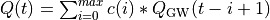
where 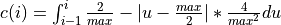
see also:
Hydrology III - Socio-economic - Water demand¶
waterdemand module¶
Calculate water demand from different sectors
- Naming convention:
-
class
cwatm.hydrological_modules.waterdemand.waterdemand(waterdemand_variable)[source]¶ Bases:
objectWATERDEMAND
calculating water demand - Industrial, domenstic based on precalculated maps Agricultural water demand based on water need by plants
Hydrology IV - Lakes, reservoirs and river¶
lakes_reservoirs module¶
Calculate water retention in lakes
-
class
cwatm.hydrological_modules.lakes_reservoirs.lakes_reservoirs(lakes_reservoirs_variable)[source]¶ Bases:
objectLAKES AND RESERVOIRS
Note
Calculate water retention in lakes and reservoirs
Using the Modified Puls approach to calculate retention of a lake See also: LISFLOOD manual Annex 3 (Burek et al. 2013)
for Modified Puls Method the Q(inflow)1 has to be used. It is assumed that this is the same as Q(inflow)2 for the first timestep has to be checked if this works in forecasting mode!
Lake Routine using Modified Puls Method (see Maniak, p.331ff)
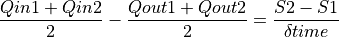
changed into:
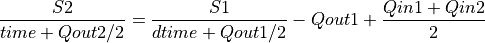
Outgoing discharge (Qout) are linked to storage (S) by elevation.
Now some assumption to make life easier:
1.) storage volume is increase proportional to elevation: S = A * H where: H: elevation, A: area of lake
2.) 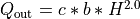 (c: weir constant, b: width)
2.0 because it fits to a parabolic cross section see (Aigner 2008) (and it is much easier to calculate (that’s the main reason)
c: for a perfect weir with mu=0.577 and Poleni: 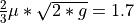
c: for a parabolic weir: around 1.8
because it is a imperfect weir: 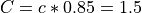
results in formular: 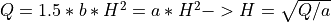
Solving the equation:
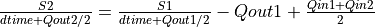
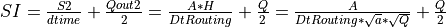
-> replacement: 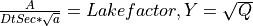
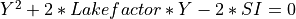
solution of this quadratic equation:
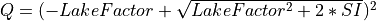
-
dynamic_inloop(NoRoutingExecuted)[source]¶ Dynamic part to calculate outflow from lakes and reservoirs
lakes with modified Puls approach
reservoirs with special filling levels
- Parameters
NoRoutingExecuted – actual number of routing substep
- Returns
outLdd: outflow in m3 to the network
Note
outflow to adjected lakes and reservoirs is calculated separately
-
initWaterbodies()[source]¶ Initialize water bodies Read parameters from maps e.g area, location, initial average discharge, type 9reservoir or lake) etc.
Compress numpy array from mask map to the size of lakes+reservoirs (marked as capital C at the end of the variable name)
-
lakes_res_small module¶
Calculate water retention in small lakes
-
class
cwatm.hydrological_modules.lakes_res_small.lakes_res_small(lakes_res_small_variable)[source]¶ Bases:
objectSmall LAKES AND RESERVOIRS
Note
Calculate water retention in lakes and reservoirs
Using the Modified Puls approach to calculate retention of a lake See also: LISFLOOD manual Annex 3 (Burek et al. 2013)
routing_reservoirs.routing_kinematic module¶
River routing - kinematic wave
-
class
cwatm.hydrological_modules.routing_reservoirs.routing_kinematic.routing_kinematic(routing_kinematic_variable)[source]¶ Bases:
objectROUTING
routing using the kinematic wave
-
catchment(point)[source]¶ Get the catchment from “global” LDD and a point
load and create a river network
calculate catchment upstream of point
-
dynamic()[source]¶ Dynamic part of the routing module
calculate evaporation from channels
calculate riverbed exchange between riverbed and groundwater
if option waterbodies is true, calculate retention from water bodies
calculate sideflow -> inflow to river
calculate kinematic wave -> using C++ library for computational speed
-
routing_reservoirs.routing_sub module¶
Sub routines for river routing
-
cwatm.hydrological_modules.routing_reservoirs.routing_sub.Compress(map, mask)[source]¶ compressing map from 2D to 1D without missing values
- Parameters
map – input map
mask – mask map
- Returns
compressed map
-
cwatm.hydrological_modules.routing_reservoirs.routing_sub.catchment1(dirUp, points)[source]¶ calculates all cells which belongs to a catchment from point onward
- Parameters
dirUp –
points –
- Returns
subcatchment
-
cwatm.hydrological_modules.routing_reservoirs.routing_sub.decompress(map)[source]¶ Decompressing map from 1D to 2D with missing values
- Parameters
map – compressed map
- Returns
decompressed 2D map
-
cwatm.hydrological_modules.routing_reservoirs.routing_sub.defLdd2(ldd)[source]¶ defines river network
- Parameters
ldd – river network
- Returns
ldd variables
-
cwatm.hydrological_modules.routing_reservoirs.routing_sub.dirDownstream(dirUp, lddcomp, dirDown)[source]¶ runs the river network tree downstream - from source to outlet
- Parameters
dirUp –
lddcomp –
dirDown –
- Returns
direction downstream
-
cwatm.hydrological_modules.routing_reservoirs.routing_sub.dirUpstream(dirshort)[source]¶ runs the network tree upstream from outlet to source
- Parameters
dirshort –
- Returns
direction upstream
-
cwatm.hydrological_modules.routing_reservoirs.routing_sub.downstream1(dirUp, weight)[source]¶ calculated 1 cell downstream
- Parameters
dirUp –
weight –
- Returns
dowmnstream 1 cell
-
cwatm.hydrological_modules.routing_reservoirs.routing_sub.lddrepair(lddnp, lddOrder)[source]¶ repairs a river network
eliminate unsound parts
add pits at points with no connections
- Parameters
lddnp – rivernetwork as 1D array
lddOrder –
- Returns
repaired ldd
-
cwatm.hydrological_modules.routing_reservoirs.routing_sub.lddshort(lddnp, lddOrder)[source]¶ return short for calculating a catchment from a river network
- Parameters
lddnp – rivernetwork as 1D array
lddOrder –
- Returns
short ldd
-
cwatm.hydrological_modules.routing_reservoirs.routing_sub.postorder(dirUp, catchment, node, catch, dirDown)[source]¶ Routine to run a postorder tree traversal
- Parameters
dirUp –
catchment –
node –
catch –
dirDown –
- Returns
dirDown and catchment
-
cwatm.hydrological_modules.routing_reservoirs.routing_sub.subcatchment1(dirUp, points, ups)[source]¶ calculates subcatchments of points
- Parameters
dirUp –
points –
ups –
- Returns
subcatchment
Hydrology V - Water balance¶
waterbalance module¶
-
class
cwatm.hydrological_modules.waterbalance.waterbalance(waterbalance_variable)[source]¶ Bases:
objectWATER BALANCE
check if water balnace per time step is ok ( = 0)
produce an annual overview - income, outcome storage
-
dynamic()[source]¶ Dynamic part of the water balance module If option sumWaterBalance sum water balance for certain variables
-
waterBalanceCheck(fluxesIn, fluxesOut, preStorages, endStorages, processName, printTrue=False)[source]¶ Dynamic part of the water balance module
Returns the water balance for a list of input, output, and storage map files
- Parameters
fluxesIn – income
fluxesOut – this goes out
preStorages – this was in before
endStorages – this was in afterwards
processName – name of the process
printTrue – calculate it?
- Returns
-
waterBalanceCheckSum(fluxesIn, fluxesOut, preStorages, endStorages, processName, printTrue=False)[source]¶ Returns the water balance for a list of input, output, and storage map files and sums it up for a catchment
- Parameters
fluxesIn – income
fluxesOut – this goes out
preStorages – this was in before
endStorages – this was in afterwards
processName – name of the process
printTrue – calculate it?
- Returns
Water balance as output on the screen